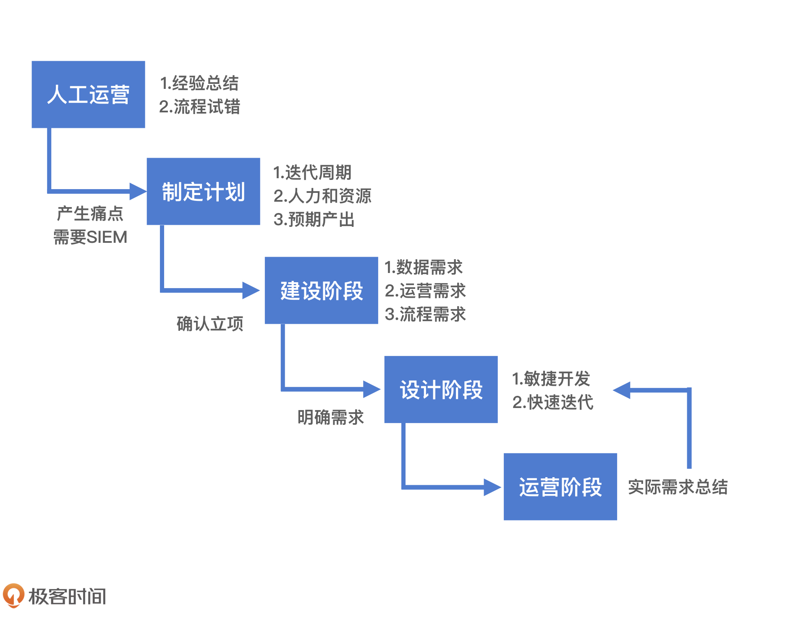
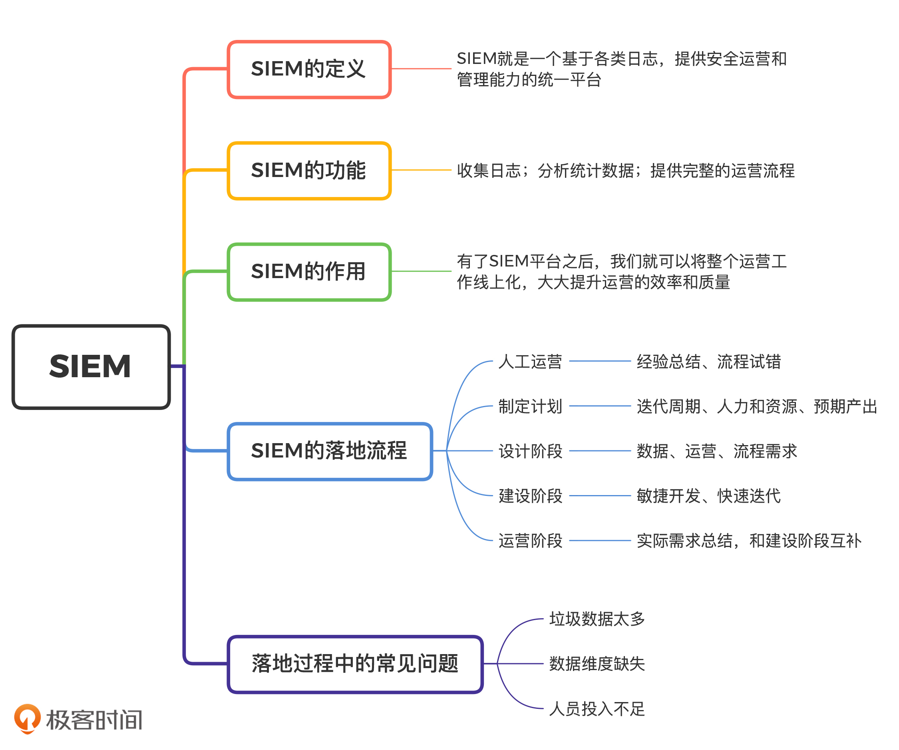

- 00 开篇词 别说你没被安全困扰过.md.html
- 01 安全的本质：数据被窃取后，你能意识到问题来源吗？.md.html
- 02 安全原则：我们应该如何上手解决安全问题？.md.html
- 03 密码学基础：如何让你的密码变得“不可见”？.md.html
- 04 身份认证：除了账号密码，我们还能怎么做身份认证？.md.html
- 05 访问控制：如何选取一个合适的数据保护方案？.md.html
- 06 XSS：当你“被发送”了一条微博时，到底发生了什么？.md.html
- 07 SQL注入：明明设置了强密码，为什么还会被别人登录？.md.html
- 08 CSRF_SSRF：为什么避免了XSS，还是“被发送”了一条微博？.md.html
- 09 反序列化漏洞：使用了编译型语言，为什么还是会被注入？.md.html
- 10 信息泄露：为什么黑客会知道你的代码逻辑？.md.html
- 11 插件漏洞：我的代码看起来很安全，为什么还会出现漏洞？.md.html
- 13 Linux系统安全：多人共用服务器，如何防止别人干“坏事”？.md.html
- 14 网络安全：和别人共用Wi-Fi时，你的信息会被窃取吗？.md.html
- 15 Docker安全：在虚拟的环境中，就不用考虑安全了吗？.md.html
- 16 数据库安全：数据库中的数据是如何被黑客拖取的？.md.html
- 17 分布式安全：上百个分布式节点，不会出现“内奸”吗？.md.html
- 18 安全标准和框架：怎样依“葫芦”画出好“瓢”？.md.html
- 19 防火墙：如何和黑客“划清界限”？.md.html
- 20 WAF：如何为漏洞百出的Web应用保驾护航？.md.html
- 21 IDS：当黑客绕过了防火墙，你该如何发现？.md.html
- 22 RASP：写规则写得烦了？尝试一下更底层的IDS.md.html
- 23 SIEM：一个人管理好几个安全工具，如何高效运营？.md.html
- 24 SDL：怎样才能写出更“安全”的代码？.md.html
- 25 业务安全体系：对比基础安全，业务安全有哪些不同？.md.html
- 26 产品安全方案：如何降低业务对黑灰产的诱惑？.md.html
- 27 风控系统：如何从海量业务数据中，挖掘黑灰产？.md.html
- 28 机器学习：如何教会机器识别黑灰产？.md.html
- 29 设备指纹：面对各种虚拟设备，如何进行对抗？.md.html
- 30 安全运营：“黑灰产”打了又来，如何正确处置？.md.html
- 加餐1 数据安全：如何防止内部员工泄露商业机密？.md.html
- 加餐2 前端安全：如何打造一个可信的前端环境？.md.html
- 加餐3 职业发展：应聘安全工程师，我需要注意什么？.md.html
- 加餐4 个人成长：学习安全，哪些资源我必须要知道？.md.html
- 加餐5 安全新技术：IoT、IPv6、区块链中的安全新问题.md.html
- 模块串讲（一）Web安全：如何评估用户数据和资产数据面临的威胁？.md.html
- 模块串讲（三）安全防御工具：如何选择和规划公司的安全防御体系？.md.html
- 模块串讲（二）Linux系统和应用安全：如何大范围提高平台安全性？.md.html
- 结束语 在与黑客的战役中，我们都是盟友！.md.html
- 捐赠
23 SIEM：一个人管理好几个安全工具，如何高效运营？
你好，我是何为舟。
在前面的课程中，我们介绍了一些常见的安全产品。但实际上，解决公司的安全问题，并不是部署了这些安全产品就万事大吉了。安全防护的过程是一个与黑客持续进行攻防对抗的过程，黑客总是能够发现新的方法，绕过安全产品的防护，实施攻击。
如果黑客绕过安全产品，我们应该如何及时发现黑客的攻击呢？具体来说，我们应该如何对黑客的攻击路径和攻击产生的影响进行统计分析？以及在发现黑客的攻击之后，我们要如何提取攻击特征，补充安全产品的检测规则呢？这些都是我们需要持续关注的事情。因此，我们常说“建立一个安全体系很简单，运营好一个安全体系却很复杂”。
我们经常会使用SIEM（Security Information and Event Management，安全信息和事件管理），来帮助我们运营一个安全体系。通过SIEM，我们可以将散落于各个系统、设备和安全产品中的日志进行汇总和梳理，快速串联出黑客的完整攻击路径，更高效地完成安全体系运营的工作。
那SIEM究竟是如何高效运营安全体系的呢？下面，我们一起来看。
SIEM有哪些功能？
我们先来说一下SIEM是什么。简单来说，SIEM就是一个基于各类日志，提供安全运营和管理能力的统一平台。基于这个定义，我们来总结一下SIEM的功能。
首先是收集日志。对SIEM来说，需要收集的日志来源于操作系统、路由器、数据库等业务设备，防火墙、WAF、IDS等安全产品，以及业务前后端本身。
在收集到大量的日志之后，SIEM会对数据进行分析统计，将海量的日志进行筛选和总结，给予安全运营人员最精简的结果，提高分析效率。经过数据分析之后，安全运营人员就能够快速发现并处理各类安全事件了。
最后，SIEM还需要提供完整的运营流程。比如，通过工单功能完成安全事件的管理，通过报表追踪各安全产品产生的报警、发起的安全事件、数据的流动情况等，清晰地表现出公司的安全现状和能力。
没有SIEM平台之前，安全运营人员需要对这些安全事件和报警进行人工处理和记录，不仅效率较低而且容易出现纰漏。有了SIEM平台之后，我们就可以将整个运营工作线上化，大大提升运营的效率和质量。
SIEM是如何落地的？
不知道你有没有发现，我一直强调“运营”这个词。相比我们之前讲过的安全产品，SIEM更加注重运营。因此，落地SIEM可不仅仅是部署一款安全产品这么简单。
我们之前提到的安全产品（防火墙、WAF、IDS等）都是以技术为导向的。换一句话说，这些安全产品效果好不好，实际上取决于技术和检测规则。只要技术实现上能够满足性能要求，规则上能够尽可能多地覆盖攻击特征、检测黑客行为、减少误伤，就很容易落地并产生收益。
但是SIEM不一样。我在说SIEM的核心功能的时候，你可能很快联想到，可以使用经典的日志分析组件ELK，去实现SIEM的各个功能。所以你看，SIEM其实不存在特别明显的技术挑战。
那为什么很多公司在规划做一个SIEM的时候，最终都“虎头蛇尾”、不了了之了呢？原因就是我们一直强调的“运营”能力不足。运营能力不足让这些公司做出来的SIEM空有一个架子，无法实际落地，也就无法产生应有的价值。
那么问题来了，SIEM究竟该如何落地呢？下面，我就结合SIEM落地的流程图，带你一起分析。- 
1. 制定计划
首先，当我们决定要做SIEM的时候，需要制定一个长期的计划。依据公司的安全情况，这个长期可能意味着1-3年的持续投入。
在部署一些成熟的安全产品（比如，防火墙、WAF等）时，公司只需要在采购和研发时进行一次性投入，之后再花费少量的资源运维就可以了。所以，这些安全产品的落地就是发现问题、解决问题的过程。
但是，SIEM并不是一个通用的安全产品，每个公司都需要花费大量时间磨合SIEM的设计、部署和运转。因此，我们需要制定长期的、体系化的落地计划。通常这个计划分三个阶段：设计阶段、建设阶段和运营阶段。在SIEM启动之前，我们就要预估：每个阶段投入的人力、时间、成本；每个阶段的需求和预期产出；每个阶段按月或者按季度的时间节点等。这些确定下来之后，还要公司同步确认才行。
2. 设计阶段
计划制定完成之后，就进入设计阶段了。在设计阶段，我们首先需要明确公司对SIEM的需求，或者说，我们希望SIEM能够解决哪些问题。这些问题和需求都是从哪里产生的呢？
其实，在建设安全体系，引入了部分的安全产品之后，我们在安全运营上会感受到很多痛点。比较常见的，由于安全设备过多，我们在实际分析日志的时候，需要一个一个登录这些设备查找日志，这大大降低了我们的工作效率。
这个时候，很多人会提出搭建一个SIEM平台来解决这些痛点。但实际上，这些痛点都是很宽泛的需求。这些需求没有很清晰地定位出，SIEM平台究竟需要收集哪些设备上的哪些日志，我们又应该以什么样的格式存储和整合这些日志。
所以，为了给SIEM一个清晰的定位，我们需要总结出一份详细的需求列表。我认为可以从三方面来总结。
第一方面：SIEM需要管理哪些设备，收集哪些数据。
这个列表需要根据我们的实际运营工作来进行总结。一般来说，我们可以根据黑客的攻击路径来进行梳理。
比如，在Web攻击中，黑客首先需要发起HTTP请求。那么黑客会先在前端进行操作，然后HTTP请求经过防火墙、WAF，最终到达服务端。因此，前端、防火墙、WAF和服务端对应的请求日志，我们都需要收集。
如果涉及进一步的权限提升，那黑客需要在服务器内进行操作，或者通过路由器、交换机访问其他服务器。所以，这些服务器、网络设备和IDS中的行为日志，同样需要收集。
第二方面：安全运营目前遇到的痛点的典型场景是什么，预期的解决方案又是怎么样的。
安全运营最大的痛点有两个，一是日志分散，二是日志无法关联。通过日志收集功能，我们已经将日志进行了汇总，解决了日志分散问题。那日志间的关联问题该怎么解决呢？
我们来看一个例子。
一次Web攻击要收集的日志有很多：网关上记录的一次HTTP请求，WAF上对应的一次判定记录，服务端可能记录的具体请求参数。如果黑客攻击成功，那么系统上还可能留下一次命令执行的记录。如果我们想要将这些日志进行串联，还原完整的攻击链路，就必须要求SIEM在各个日志中能记录特殊的标记。在Web请求中，这些特殊的标记通常是用户ID、IP或者设备ID等。
更复杂一些的，当HIDS发现了一起攻击时，你可能需要回溯黑客是怎么进入系统的，那我们就需要将HIDS中的日志，和NIDS、WAF等其他日志进行关联。但是，这些日志类型不同，没有能够贯穿始终的标记。这个时候，就需要SIEM能够通过额外的信息进行关联。比如，通过登录日志中的用户和IP关联HIDS和NIDS日志等。对这些关联关系的梳理和定义，决定了SIEM需要以什么形式存储日志。
第三方面：完整的安全运营流程是什么。
我们最终设计出来的SIEM，肯定不只是简单地堆砌一些功能。对于运营工作来说，工具和标准化流程同样重要。如果在实际工作中，运营人员使用线上工具，执行的却是线下流程。这种状态切换导致的时间消耗，对于运营工作来说反而得不偿失。因此，在数据分析完成之后，我们需要依据运营工作的需求，整合出SIEM需要的管理功能（比如。工单、报表），形成一个完整的运营流程。
通过对这些需求的分析和整理，我相信你已经能够清晰地预估SIEM的完整形态了。那么，不管是你自己设计、研发，还是采购商业的SIEM平台，你都能够进行合理地功能分析和收益评估了。
3. 建设阶段
在完成需求设计之后，就进入SIEM平台的建设阶段了。首先，SIEM要收集各种设备和应用的日志，每个公司的设备和应用都有很多，我们没有能够取巧的方式，只能一个一个进行对接。可想而知，SIEM的建设一定是一个十分漫长的过程。SIEM的实施周期长、成本大，所以我们的预期常常很高，很容易产生达不到预期的失落感。
那么，我们应该如何去建立正确的预期呢？最简单有效的方法就是建立短期预期，并且快速迭代。比如，在最开始的建设阶段，SIEM只需要满足日志管理，也就是满足我们在一个统一的平台查看各个日志即可，至于如何去分析数据、产出报表，我们可以放到下一个迭代周期去规划。在明确了这些可实现的预期之后，我们就能理清每个迭代周期的工作，也能够增强公司对SIEM这个长期项目的信心，从而获得更好地支持。
4. 运营阶段
在收集到部分常用日志，有了基础的数据分析能力之后，安全运营人员就可以使用SIEM平台进行运营分析工作了。
但是，SIEM平台的运营和建设阶段并不是完全独立的。因为，SIEM平台的建设需要通过不断的短期迭代进行推进。SIEM平台建设迭代周期主要参考的，就是运营阶段SIEM平台的使用情况和产生的需求。
这样一来，SIEM平台就能够以不断满足安全运营需求为导向，持续完善自身功能，最终大大提升安全运营人员的工作效率。
SIEM落地中有哪些常见问题？
现在，相信你已经知道SIEM平台落地的几个主要步骤了。除此之外，我还想强调SIEM落地中几个常见的问题。
第一个：垃圾数据太多。
如果你接触过大数据分析，你应该听说过“Garbage in，garbage out”。SIEM的本质其实也是一个大数据分析的平台，它同样对数据的质量有着极高的要求。
因此，在考虑SIEM的数据收集需求时，我们需要思考清楚哪些日志对SIEM有用，基于这些日志，你是否能够解决安全运营问题。这样一来，SIEM就不会变成一个只用来存储大量无用数据的“垃圾场”了。
第二个：数据维度缺失。
数据维度缺失对SIEM来说，同样是一个致命伤。为什么这么说呢？SIEM中的数据都是需要长期积累的，某些历史数据一旦缺失就很难有办法补充。因此，经常会出现在使用SIEM的过程中，我们突然发现某些关键字段缺失，导致事件排查中断。
比如，对于一次网络请求，我们可能会记录的日志字段包括：时间、源IP、目标IP等。但是，当出现一起安全事件时，你除了要知道是哪个IP发起的请求，可能还需要进一步挖掘是哪个用户或者哪个进程发起的这次请求。这个时候，如果数据维度缺失了，就会出现没有日志可以进行关联的情况，分析运营工作也就无法继续下去了。
第三个：人员投入不足。
SIEM平台实际上是对安全运营工作的一个线上化呈现，而运营工作始终是需要依靠人来进行主导的。很多公司乐观地认为有了SIEM平台，就不需要专门的人员来维持安全运营工作了。
事实上，SIEM只是一个管理的工具，它无法自己运行，需要有人去使用它。除此之外，随着安全的对抗升级，运营工作的需求也会不断更新，SIEM自身的迭代升级会一直持续。因此，SIEM需要有一个完整的安全团队来进行长期的维护。
总结
好了，今天的内容讲完了。我们来一起总结回顾一下，你需要掌握的重点内容。
安全的发展，前期在于技术建设，长期在于运营升级。SIEM就是在安全运营升级过程中，为公司提升效率、加强管理的一个工具。SIEM通过收集各个系统和设备的日志，能够为我们提供安全统一管理的基础数据。然后，通过对常见的数据分析和报表展示，SIEM可以帮助我们快速排查安全事件、进行事件管理，同时满足数据报表甚至合规审查的需求。
你可能听说过这样一句话“技术总是短期内被高估，在长期内又被低估”。SIEM也是一样。SIEM的落地和生效是一个长期发展的过程，很难在短期内有十分明显的收益。所以，我们需要做好长期规划、明确需求，同时拆解目标，一步一个脚印去迭代发展，才能最终将SIEM长期稳定地运营和使用起来。

思考题
最后，我们来看一道思考题。
如果你的公司使用了很多安全产品，你想要对这些产品进行统一的管理和运营。那么，你需要SIEM收集哪些日志、提供哪些数据分析的能力，来帮助你进行高效运营呢？
欢迎留言和我分享你的思考和疑惑，也欢迎你把文章分享给你的朋友。我们下一讲再见！
© 2019 - 2023 Liangliang Lee. Powered by gin and hexo-theme-book.